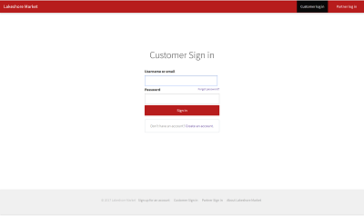

Lakeshore Market: E-commerce on-campus
Introduction
Lakeshore-market is a RESTful web service that provides students at a university with e-commerce functionalities. It lets students buy anything that is up for sale by other students. It is basically amazon tailored specifically to Loyola’s niche.
Motivation
There are certain items that students feel like putting up for sale for other students to buy. Some students might like to sell a book they no longer need or other items from their room they won’t use. Whatever the reason may be, the current way students are able to engage in such type of activities is through posts on Facebook page known as Loyola Buy/sell. There are a lot of things that make this method quite inconvenient. For example, let’s assume there is a post asking if anyone is interested in buying a theology book. After about a week or so, a student might go to the page but may not find the old post even if the student would have been interested in the theology book. There is also no way for students to filter or search for posts that contain a product of interest on the Facebook page. The goal of this project is to solve these issues and provide functionalities that will make e-commerce among students on campus a lot more convenient than it currently is.
Higher level description of the project
Both sellers and buys will need to have an existing account which is active to use the services provided. When students want to sell a new or used product, they will sign up for an account and then add the product to their inventory. They can also choose to modify an existing product in their inventory. From a buyer’s perspective, the user has the option to filter or search for available products via multiple parameters. Once buyers have selected the appropriate products, they can place an order. Everything from managing transactions, validating and assembling order content, and validating payment is handled by the server as soon as the user places an order. The web service also provides functionalities for managing accounts of both Sellers and buyers.
By using the API endpoints, the client can integrate ways for the user to view most popular or trending products, highest rated products and/or recently added products by sellers. The The exclusivity of the service to only a specific school makes it easier for students to discover things they’re more likely to find appealing by filtering products by ratings, popularity, or date. Once an order has been placed, the seller will be notified of the order and will also be provided with delivery location services by using Google’s Map API. A sample lakeshore client has been deigned and implemented that utilizes the lakeshore market web service APIs to provide an e-commerce service to exclusively Loyola University Chicago students.

Development stages
The project was designed in four main phases. We started off by first going through various use cases: the buying experience, the seller/buyer registration. We identified key vocabularies to start off the design of our domain layer. We wanted to start our design with the most essential features but leave room for extensions such as review system management, recommendation systems and providing sales history and statistics. We continued to work on the design with maintainability and extensibility in mind. Once we had a stable domain layer design, we started working on an ER Schema for our database based on the domain layer design we set up. We then moved on to the second phase of our development process.
The second phase involved designing and implementing the service layer of the system. We had to walk through the uses cases in detail again to identify the key endpoints we needed to expose and to identify the right type and number of representation and request classes to incorporate into our service layer design. We wanted to make sure that our project was at Level 2 of The Richardson Maturity model at the end of this phase.
In the third phase of the project, we implemented HAETOAS which involved thinking of all possible next steps the client could take after making a request. In the final phase the project, we designed and implement a web client that utilizes the REST web service.
Endpoints
Lakeshore-market provides functionalities for the following:
- Account management: Lakeshore market provides APIs for creating an account, modifying any part of the account, retrieving an account, or deactivating an account.
- Product management includes endpoints for searching for products by using various parameters, retrieving most recent and most popular products, allowing seller to add, update, retrieve and delete products to/from their inventory. It also provides functionality for filtering products based on multiple parameters such as cost range, product type, seller and rating.
- Order management this includes endpoints for placing an order, cancelling an order, checking the status of an order, retrieving an order detail, and retrieving an order confirmation.
- Delivery management Lakeshore-market lets the seller manage delivery. However, there are endpoints that allow the seller to provide delivery status information on an order, and also provides API endpoints that allow the buyer to track the status of a delivery. The client web app also integrates Google maps API to provide location services for delivery using the profile information of the seller and the buyer.
- Transaction Management The API endpoints for managing transactions are currently under implementation. We are working on endpoints that will allow buyers to view transaction history, and integrate Braintree’s API to manage payment.
- Statistics management This module, which is currently under design stage, will provide history and statistics of sales to both customers and buyers.
What's next?
The next immediate step for the project will be deploying the application on AWS. Once this is complete, Braintree API integration to manage transactions will be implemented followed by rigorous error-checking and exception handling and addition of new features such as product recommendations, managing user subscriptions to sellers, handling ratings and reviews, and providing history and statistics on sales to both buyers and sellers.
Links
For the project's GitHub link, click here
For the documentation of currently working and available endpoints on Swagger, click here
For the client web app's GitHub link, click here